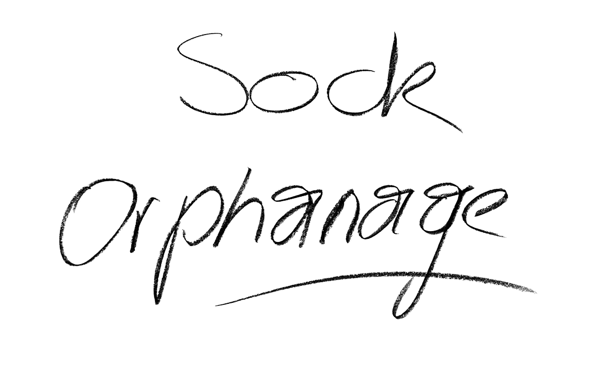

I remember it like it was yesterday, when Benny and I went on this camping trip. We arrived with all the other kids in this yellow-orange camper van. I remember we listened to music the whole time because we just got a Walkman for Christmas. The only problem was that we only had one pair of headphones, so we always had to switch between songs. When we arrived, it had just rained, the floor was still wett, and there was mud all around, but you could smell the scent of the fir tree. And then I just remember three joyful days of playing, going on scavenger hunts in the forest, and spending time in the red tent, and then the thunderstorm on our last day came. We just came back from a long hike, so I was just reading in my tent, when I heard the supervisers screaming that we need to pack up and leave, there was no time to evacuate everyone, and benny and a group of other boys had gone out to look for woods to carve swords, we couldn’t find them so we had to leave them behind and that was the last time I saw my brother, 17 years ago.
Childhood Poster Collection


THE LOST
SOCK ARCHIVE
SOCK ARCHIVE